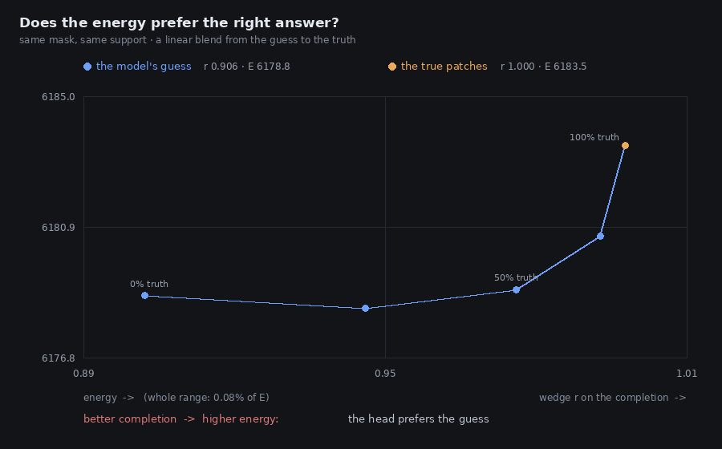
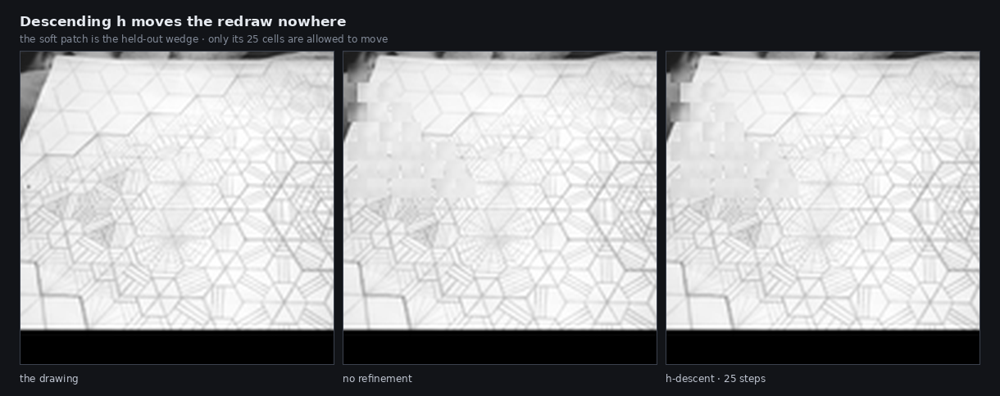
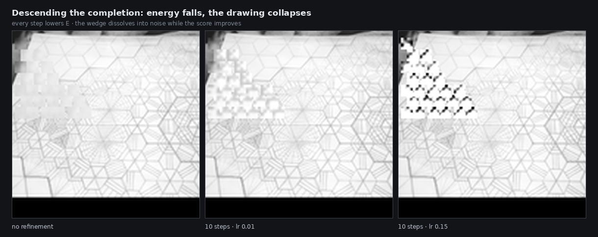
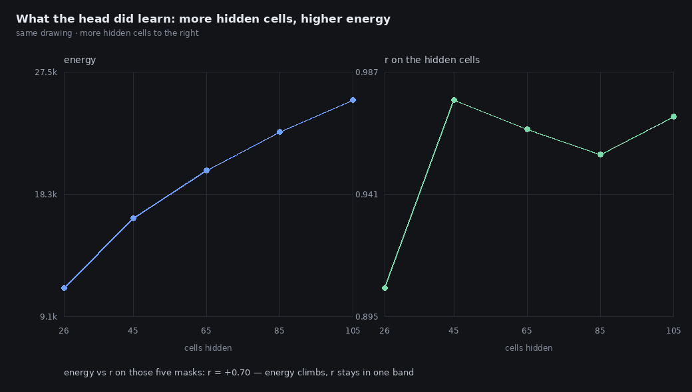

Can an energy head turn the completion into a search?
The first write-up ended with a question: instead of one forward pass, could the
model search for a better redraw by minimising a learned scalar over its own
hidden states? Freeze the 405k-parameter backbone, fit a small
E(h) on top, descend it on the 25 hidden cells. The head
costs 6,946 parameters and 64 seconds to test. It learned something real — just not
the thing descent needs.
6,946head parameters
24/24visibility pairs ranked
+0.08%E(true) vs E(guess)
0.9049wedge r after descent
64 swhole experiment
The plan
Option A from the notes: keep the trained GNN frozen, learn a scalar
energy on the states it produces, then treat completion as minimisation.
E(h) = Σ_i φ(h_i) + Σ_(i,j) ψ(h_i, h_j, e_ij)
φ : 64 → 64 → 1 per node
ψ : 64 + 64 + 21 → 32 → 1 per directed edge, geometry included
6,946 parameters (2,113 without ψ)
The head is trained on pairs of states from the frozen backbone: one where most of the
drawing was visible, one where most of it was hidden.
loss = relu(E_seen − E_hidden + 2), 400 AdamW steps, no
backbone in the loop. Every training state keeps the held-out wedge hidden, so the
wedge test cannot leak the answer. Descent then moves only the 25 hidden nodes'
states, anchored to where the forward pass left them, with the step size and anchor
tuned on the validation mask — never on the wedge.
Three questions decide whether this can work at all: does
E prefer the true patches to the model's guess? does it order
completions by quality? does descending it improve the redraw? All three are
measurable, and all three are below.
Every test, and what it returned
One checkpoint, one drawing, one seed unless noted. Baseline: wedge
r 0.9057, MSE 0.00245 on 25 cells.
Test
Asks
Result
true patches vs the guess
does E prefer the answer?
6,183.5 vs 6,178.8 · +0.08% the wrong way
blend guess → truth, 5 points
does E fall as r rises?
r 0.906 → 1.000, E 6,178.8 → 6,183.5
24 visibility pairs
does E rank "saw more" lower?
24 / 24 correct
hide 26 → 105 cells
does E track how much was hidden?
11.2k → 25.3k, monotone
descend h, 25 steps
does wedge r improve?
0.9049 (was 0.9057), E −1.7%
node-only head (2,113 params)
does the edge term matter?
0.9055, same non-result
descend the completion, 10 steps
does a lower E mean a better redraw?
r 0.832 → 0.156 as lr rises, E falls throughout
best of 8 sampled states
can E pick a better candidate?
Δr −0.0007 ± 0.0009 (8 seeds)
per-node E vs per-node error
is it an uncertainty map?
r −0.52 on the wedge, +0.26 on val
The last two rows matter as much as the first: a scorer that picks the best of eight
random candidates would show a positive Δr, and a useful per-cell signal would
correlate with error. Neither happens. "Best of 8" was tuned on
val_mask and then repeated over eight sampling seeds, because
the wedge is only 25 cells and a single draw is noise.
The decisive picture
Same mask, same support, five completions of increasing quality. Only the
patches change.

A usable landscape is a falling line: better redraw, lower energy. This one rises.
The whole vertical range is 0.08% of E, so the head is close to indifferent — but
what little signal it has points the wrong way, and a descent procedure will
happily follow it downhill.
Descending h: safe, because it barely moves
25 steps on the 25 hidden states, lr 0.01, anchor 0.1 tuned on
val_mask. The energy drops 1.7%; the redraw loses 0.0008 r.
The node-only head lands in the same place (0.9055), at 18 ms per step instead of 30.
Nothing here is broken — it is just inert, because the frozen backbone maps a large
region of state space to almost the same picture.

Left to right: the drawing with the wedge hidden, the ordinary forward pass, and
h-descent. The wedge is the soft patch; it is unchanged, which is what Δr = −0.0008
looks like.
Descending the completion: the exploit
The other formulation writes the guessed patches into the drawing, marks
them visible, and moves them downhill through the frozen backbone. This one can
change the picture.

Ten steps, three step sizes. E falls at every step — 9,933 → 9,840 at lr 0.005,
9,933 → 9,178 at lr 0.15 — while wedge r goes 0.906 → 0.832 → 0.156 and MSE goes
0.0024 → 0.0046 → 0.96. The head was trained to rank states, not to be optimised;
descent walks straight into whatever corner it has, and the corner is a drawing
no hand would make.
What the head actually learned
Not quality. Visibility: how much of the drawing the state had to guess.

Energy rises monotonically with the number of hidden cells, which is exactly what the
paired loss asked for. Correlation on the hidden cells stays in a 0.91–0.98 band over
the same five masks, so the rise is about how much was hidden, not
how well it was redrawn. The 24/24 pairwise result is the same finding,
sharper: give it two states of one drawing and it always ranks the one that saw more.
real
A visibility scorer
It can say how much of a drawing a state had to invent — useful for ranking masks
by expected difficulty, or flagging a pass that guessed most of its cells. That part
is measured, not asserted: 24/24 pairs and a monotone mask sweep.
missing
No quality axis
The truth scores worse than the guess; the blend is flat then rising; per-node
energy anti-correlates with error on the wedge (−0.52) and barely correlates on val
(+0.26). There is no direction in which "better redraw" is downhill.
consequence
Descent finds the exploit
h-descent is harmless only because the frozen backbone cannot move the picture
much. Let the patches move and the same gradient destroys the drawing while the
score improves. A landscape that is not a quality landscape cannot be optimised
for quality.
What would have to change
The negative result is specific, and so is the fix. A head trained to separate
"saw more" from "saw less" has no reason to know which of two equally-masked
completions is right; the objective never mentioned it. To make search work you would
need quality labels — pairs of completions of the same mask, ordered by their
true error — and a sampler that stays on the manifold of drawings the backbone can
produce, or a backbone that is fine-tuned through the energy rather than frozen
behind it. Both are larger experiments than this one, and both would still have to
beat a 0.9057 baseline that a single forward pass reaches in 0.25 s.
So this stays a documented dead end rather than a feature. The useful part is the
diagnostic: before building a search loop on top of a learned energy, check that it
prefers the answer to the guess and that its per-node values track per-node error.
Both are cheap, and this one fails both.
Reproduce it
Nothing here is retrained: the checkpoint in runs/main-hex
is the one the demo serves. The experiment trains only the head, then writes the
numbers and the five figures on this page.
~64 s on one thread of the phone CPU. Outputs: results.json
(every number quoted above), head.pt (both heads and the
tuned step), and the figures. The code is
mandalanet/energy.py — head, state bank, training, and both
descent loops — plus the one script that runs them.
One drawing, one checkpoint, one seed for the training bank; the wedge is 25 cells, so
differences below ~0.001 r are noise — which is why the sampling result carries a
standard deviation over eight seeds and the descent result is reported as a
non-improvement rather than a loss. The head sees only states the frozen backbone
produces, so this tests "energy over a frozen model's states", not energy-based
training in general.